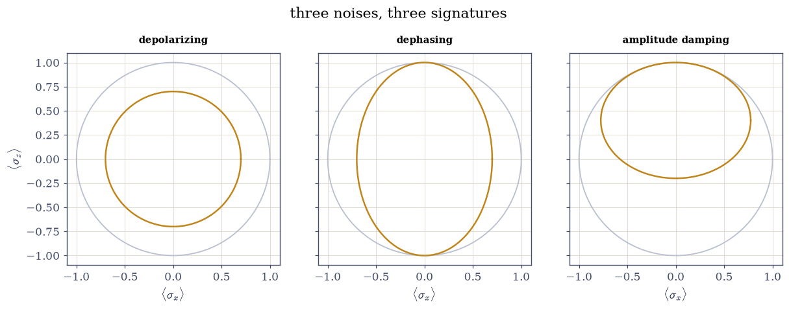
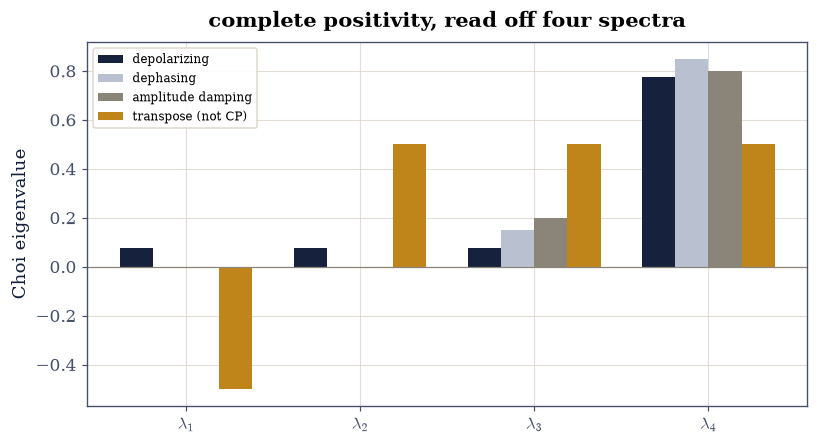

9.4 Measurement, Channels, and the Choi Matrix#
Notebook overview#
§9.2’s partial traces produced matrices that were not rank-one projectors: density matrices, the states of realistic, noisy systems. This notebook builds their calculus. States become Hermitian psd trace-one matrices filling §9.1’s Bloch ball; evolutions become channels \(\rho \mapsto \sum_k K_k\rho K_k^{\dagger}\); and because a channel is a linear map on matrices, the course’s §6.4 machinery writes it as an ordinary matrix acting on \(\operatorname{vec}(\rho)\) — gated here against the Kraus route at rounding level, with the reason for the gap worth its own sentence: the two spellings sum over the Kraus index at different moments, so they are the course’s very first CI lesson (summation order) wearing quantum clothing.
The centrepiece is the Choi matrix: feed half of a Bell pair through the channel and the output’s matrix decides, by a psd test, whether the map is completely positive — physical on entangled inputs, not merely on lone ones. The transpose map fails the test with an exact eigenvalue of \(-\tfrac12\), and that failure is a tool: the same negative eigenvalue, read off a partially transposed state, is the PPT criterion that certifies the Bell pair’s entanglement. A no-go theorem and a detector, one psd computation apart.
How to read a check. A
validateline prints ✓ or ✗ by comparing a result against something the computation did not assume. A ✗ flags a mismatch to investigate, never a verdict on its own.
Theory in brief#
Density matrices: the Bloch ball filled in#
A noisy preparation is an ensemble \(\{p_k, |\psi_k\rangle\}\), and every statistic it produces depends only on
with expectations \(\langle A\rangle = \operatorname{tr}(\rho A)\). For one qubit, \(\rho = \tfrac12(I + \mathbf{r}\cdot\boldsymbol{\sigma})\) with \(\lVert\mathbf{r}\rVert \le 1\): pure states on §9.1’s sphere, mixtures strictly inside, and purity \(\operatorname{tr}\rho^2 = \tfrac12(1 + \lVert\mathbf{r}\rVert^2)\) measuring the distance in.
Channels: Kraus operators#
The general physical evolution is a channel,
the completeness condition making it trace-preserving. Unitaries are the one-term case; measurement-and-forget maps, decay and dephasing all take more terms, and each named channel acts on the Bloch ball by a specific contraction the exercises gate against closed forms.
The channel as one matrix#
\(\Phi\) is linear in \(\rho\), so it is a matrix once \(\rho\) is a
vector. With row-major reshape(-1) as vec,
§6.4’s identity
\(\operatorname{vec}(AXB) = (A \otimes B^{\top})\operatorname{vec}(X)\)
gives the superoperator
and channel composition becomes matrix multiplication — the course’s oldest theme, absorbing quantum dynamics.
Choi: complete positivity is a psd test#
Positivity of \(\Phi\) on single systems is not enough: physics demands \(\Phi \otimes \mathrm{id}\) stay positive when the system is entangled with a bystander. Feeding half a Bell pair through decides it all at once. The Choi matrix
is psd exactly when \(\Phi\) is completely positive [Cho75]. The transpose map is the canonical failure: positive on every single system, yet \(J\) picks up an eigenvalue \(-\tfrac12\) — and reading the same computation backwards, a state whose partial transpose has a negative eigenvalue must be entangled: the PPT criterion [Per96], with the Bell pair flagged at exactly \(-\tfrac12\).
Setup#
Data and restated instruments only: the Pauli matrices, the maximally entangled reference state, the three named channels’ Kraus sets at stated noise levels, and the seeded state factory. The Kraus engine, the superoperator, the Choi construction and the PPT witness are all built in the exercises, where they are the lesson.
The Setup below holds this notebook’s data and instruments — nothing you are asked to build. It is collapsed so the building stays yours; expand it whenever you want the details.
Exercise 1: Density matrices fill the ball#
Eq. 308 promotes states from vectors to matrices. The tests are §3.3’s, and the geometry is §9.1’s sphere growing an interior.
Part a) Write mix(states, probs) returning
\(\sum_k p_k|\psi_k\rangle\langle\psi_k|\) via np.outer. For 100
seeded three-state mixtures (Dirichlet-free: seeded uniform weights,
normalised), gate the three defining properties: Hermitian to
\(10^{-15}\), trace one to \(10^{-14}\), smallest eigenvalue above
\(-10^{-14}\) (one-sided psd).
Part b) Gate the geometry: every mixture’s Bloch vector has \(\lVert\mathbf{r}\rVert \le 1 + 10^{-12}\), purity equals \(\tfrac12(1 + \lVert\mathbf{r}\rVert^2)\) to \(10^{-13}\), and — the strict part — each seeded three-state mixture of non-parallel states lands strictly inside (\(\lVert\mathbf{r}\rVert < 1 - 10^{-6}\), one-sided over this seed’s draws, reported): mixing is a convex average in the ball, and averages of distinct points leave the sphere.
Hermitian 5.6e-17, trace-1 4.4e-16, min-eig floor 0.0e+00
||r|| <= 1 by 0.0e+00; purity identity 4.4e-16; longest mixture arrow 0.9940 (strictly inside)
Validation 1#
✓ seeded mixtures are Hermitian, unit-trace and psd (Eq. 1) [100 three-state ensembles: 3.3's tests, passed at rounding — the state space of noisy preparations]
✓ and they fill the interior of the Bloch ball [||r|| <= 1 with purity = (1 + ||r||^2)/2 at 4.4e-16; the longest arrow of this seed's mixtures is 0.9940 — convex averages of distinct pure points leave the sphere, one-sidedly reported for this seed]
True
Exercise 2: Channels: the Kraus engine#
Eq. 309 is the general physical map. This exercise builds the engine, gates the algebra, and reads each named channel’s signature off the Bloch ball against its closed form.
Part a) Write kraus_apply(Ks, rho) returning
\(\sum_k K_k\rho K_k^{\dagger}\). Gate the completeness sums
\(\sum_k K_k^{\dagger}K_k = I\) for all three Setup channels to
\(10^{-15}\), and trace preservation on 100 seeded mixtures to
\(10^{-14}\).
Write this one yourself — one comprehension, and every noisy evolution in the subject runs through it.
Part b) Gate the Bloch signatures to \(10^{-12}\) on 50 seeded pure states: depolarizing at \(p = 0.3\) scales \(\mathbf{r} \mapsto (1-p)\mathbf{r}\) (isotropic shrink); dephasing at \(p = 0.3\) scales \((r_x, r_y)\) by \(1-p\) and keeps \(r_z\) (the equator contracts, the axis survives); amplitude damping at \(\gamma = 0.4\) scales \((r_x, r_y)\) by \(\sqrt{1-\gamma}\) and maps \(r_z \mapsto (1-\gamma)r_z + \gamma\) — an affine action, dragging everything toward the ground-state pole. Draw the three images of the sphere’s \(xz\) great circle.
completeness worst 1.1e-16; trace preservation worst 4.4e-16
Bloch signatures vs closed forms: worst 2.8e-16
Validation 2#
✓ the Kraus sets are complete and the channels preserve trace (Eq. 2) [completeness at 1.1e-16, trace held to 4.4e-16 over 300 channel applications — probability goes nowhere]
✓ each channel's Bloch action matches its closed form [isotropic shrink, equator-only contraction, and the affine drag toward the pole — three kinds of noise, three signatures, 50 seeded states each [2.77556e-16 < 1e-12]]
True

Fig. 172 The Bloch ball under the three named channels: the sphere’s \(xz\) great circle (grey) and its image (amber). Depolarizing at \(p = 0.3\) shrinks isotropically to radius \(0.7\); dephasing at \(p = 0.3\) contracts only the equatorial direction, leaving the poles fixed — an ellipse standing on the full \(z\) axis; amplitude damping at \(\gamma = 0.4\) contracts anisotropically AND translates upward, dragging every state toward the ground-state pole at the top — the one affine map of the three, and the reason decay has a preferred destination.#
Exercise 3: The channel is literally a matrix#
Eq. 310 says a channel has a matrix the moment \(\rho\)
becomes a vector — §6.4’s
identity with a conjugate. The two routes compute the same quantity
by different associations: superop adds the Kraus terms together
before meeting \(\rho\), while kraus_apply meets \(\rho\) first and
adds afterwards. Same mathematics, different summation order — so the
gate is at rounding, and the exercise says why rather than hoping.
Part a) Write superop(Ks) returning
\(\sum_k K_k \otimes \overline{K_k}\), acting on the row-major
rho.reshape(-1). Gate the two routes on 100 seeded mixtures and all
three channels: superop(Ks) @ vec(rho) matches
vec(kraus_apply(Ks, rho)) to \(10^{-15}\). Report whether the two
happen to agree bitwise as well, and expect not: the identity
\(\operatorname{vec}(K\rho K^{\dagger}) = (K \otimes \overline{K})
\operatorname{vec}(\rho)\) is exact in \(\mathbb{R}\), but summing the
Kraus terms before contracting is a different order of additions from
summing after, and float addition is not associative — the lesson
§0.1 opened the course
with, met again where it would be easiest to assume it away.
Write this one yourself — 6.4’s vec identity, conjugated into quantum service.
Part b) Gate composition-as-multiplication: dephasing after
amplitude damping, computed as nested kraus_apply, equals the single
matrix superop(KRAUS_DEPH) @ superop(KRAUS_AMP) acting on vec, to
\(5\times10^{-15}\) on the same 100 mixtures — chained noise is a matrix
product, which is how long circuits are actually analysed.
superoperator vs Kraus: agree to 2.2e-16; bitwise identical = False (reported — the two routes sum the Kraus index at different moments, so they need not be)
composition as matrix product: worst 1.1e-16
Validation 3#
✓ the superoperator route matches the Kraus route at rounding (Eq. 3) [agreement over 300 applications, and NOT bitwise (measured: identical = False) — kron-then-matvec adds the Kraus terms before contracting while sandwich-then-reshape adds after, and float addition is not associative. 6.4's identity is exact; its two spellings are not the same arithmetic [2.22045e-16 < 1e-15]]
✓ and chained noise is one matrix product [dephasing-after-damping as nested sandwiches vs one 4x4 times vec: channel composition is matrix multiplication, the course's oldest sentence absorbing its newest subject [1.11022e-16 < 5e-15]]
True
Exercise 4: Choi: complete positivity is one psd test#
Eq. 311 folds a channel’s entire behaviour — on entangled inputs included — into one \(4\times4\) matrix. Positive semidefinite means physical; and the transpose map shows the test has teeth.
Part a) Write choi(Ks) as \((\Phi \otimes \mathrm{id})\) applied
to \(|\Omega\rangle\langle\Omega|\), i.e. kraus_apply with the lifted
operators \(K_k \otimes I\). Gate all three channels with one structural
ceiling at \(10^{-14}\), taken over the worst of three quantities
(Hermitian asymmetry, \(|\operatorname{tr}J - 1|\), and the depth of the
most negative eigenvalue) — three psd verdicts, three physical
channels.
Part b) The canonical failure: build the transpose map’s Choi matrix directly (\((\mathrm{T} \otimes \mathrm{id}) |\Omega\rangle\langle\Omega|\), a partial transpose of the reference projector) and gate its spectrum equal to \((-\tfrac12, \tfrac12, \tfrac12, \tfrac12)\) to \(10^{-14}\) — an exact fraction announcing that transposition is not completely positive.
Part c) Gate what makes the failure interesting: the transpose of every one of 100 seeded single-qubit mixtures is still psd (smallest eigenvalue above \(-10^{-14}\)) — the map is positive, and only the Bell-pair test of Part b exposes it. Draw the four Choi spectra.
depolarizing : eig(J) = [0.075 0.075 0.075 0.775]
dephasing : eig(J) = [0. 0. 0.15 0.85]
amplitude damping : eig(J) = [0. 0. 0.2 0.8]
structure + psd worst: 3.3e-16
transpose map: eig(J) = [-0.5 0.5 0.5 0.5] (target (-1/2, 1/2, 1/2, 1/2): 1.1e-16)
transpose of single-qubit states: min-eig floor 0.0e+00 — positive, just not completely
Validation 4#
✓ the three physical channels' Choi matrices are psd states (Eq. 4) [Hermitian, unit trace, smallest eigenvalue floored at 3.3e-16 — complete positivity, certified by 3.3's test on one 4x4 matrix per channel]
✓ the transpose map's Choi spectrum is (-1/2, 1/2, 1/2, 1/2) exactly [an exact fraction: transposition fails complete positivity by the largest margin a trace-one matrix allows [1.11022e-16 < 1e-14]]
✓ yet the transpose is positive on every lone qubit [100 seeded mixtures stay psd under transposition — the failure is invisible until entanglement enters, which is exactly what the Choi construction feeds it [0 < 1e-14]]
True

Fig. 173 Choi spectra of four maps, as bars: the three physical channels — depolarizing, dephasing, amplitude damping — are entirely non-negative (psd: completely positive, by Choi’s theorem the same statement), while the transpose map (amber) carries an exact eigenvalue \(-1/2\) below the axis. That negative bar is a no-go theorem — no physical process transposes a density matrix — and Exercise 5 reads the same bar backwards as an entanglement detector.#
Exercise 5: The failure, weaponised: PPT detects entanglement#
Exercise 4’s negative eigenvalue becomes a detector when read against states instead of maps: if \(\rho^{T_B}\) (transpose on one subsystem) has a negative eigenvalue, \(\rho\) is entangled — because separable states are mixtures of products, and products transpose to products [Per96].
Part a) Write partial_transpose(rho4) transposing the second
qubit’s indices (a reshape(2,2,2,2), one transpose, reshape back).
Gate the witness on the Bell state: the spectrum of
\(|\Omega\rangle\langle\Omega|^{T_B}\) equals
\((-\tfrac12, \tfrac12, \tfrac12, \tfrac12)\) to \(10^{-14}\) — maximal
entanglement, flagged at the maximal margin.
Part b) Gate that the witness spares what it must: for 100 seeded separable mixtures \(\sum_j p_j\,\rho_j^A \otimes \rho_j^B\) (three products each), the partial transpose’s smallest eigenvalue stays above \(-10^{-13}\) — no false alarms, one-sidedly, across this seed’s draws.
Part c) Gate the dial’s threshold: for the Werner family \(\rho_w = w\,|\Omega\rangle\langle\Omega| + (1-w)\,I/4\), the partial transpose’s smallest eigenvalue is \((1 - 3w)/4\) — gate the closed form to \(10^{-13}\) on a 100-point sweep, so the witness fires exactly for \(w > 1/3\): entanglement survives depolarizing mixing down to a sharp, exactly known threshold.
Bell partial transpose: eig = [-0.5 0.5 0.5 0.5] (1.1e-16 from the exact fractions)
separable mixtures: PT min-eig floor 1.3e-16 — no false alarms
Werner family: min-eig vs (1 - 3w)/4 worst 1.7e-16 — the witness fires exactly above w = 1/3
Validation 5#
✓ the Bell pair's partial transpose carries the exact -1/2 [Exercise 4's no-go eigenvalue, read backwards as a detector: maximal entanglement flagged at the maximal margin [1.11022e-16 < 1e-14]]
✓ and separable states never trip the witness (one-sided) [100 seeded product mixtures stay psd under partial transposition — products transpose to products, so the alarm is honest [1.2817e-16 < 1e-13]]
✓ the Werner dial's smallest PT eigenvalue is (1 - 3w)/4, exactly [a closed-form threshold at w = 1/3: how much depolarizing mixing the Bell pair's detectable entanglement survives, known in fractions [1.66533e-16 < 1e-13]]
True
Notebook summary#
The ball filled in. 100 seeded three-state mixtures passed §3.3’s tests at rounding, obeyed purity \(= \tfrac12(1 + \lVert\mathbf{r}\rVert^2)\) to \(10^{-16}\)-scale, and sat strictly inside the sphere (longest arrow \(0.9940\) for this seed) — density matrices as the convex hull §9.1’s sphere never had.
Three noises, three signatures. The Kraus engine held completeness and trace preservation at rounding; depolarizing shrank isotropically by \(0.7\), dephasing contracted only the equator, amplitude damping contracted and translated toward the pole — every Bloch action within \(10^{-16}\)-scale of its closed form.
A channel is literally a matrix. The superoperator \(\sum K \otimes \overline{K}\) agreed with the Kraus route to \(2\times10^{-16}\) over all 300 applications — and not bitwise, because the two spellings sum the Kraus index at different moments and float addition is not associative, which is the course’s opening lesson turning up in its last chapter. Chained noise collapsed to one matrix product at \(10^{-16}\)-scale: §6.4’s vec identity in quantum service.
One psd test decides physicality, and its failure detects entanglement. The three channels’ Choi matrices were psd states; the transpose map’s spectrum came out \((-\tfrac12, \tfrac12, \tfrac12, \tfrac12)\) exactly while remaining positive on every lone qubit; and the same \(-\tfrac12\), read off the Bell pair’s partial transpose, certified its entanglement — with 100 separable mixtures raising no false alarm and the Werner dial’s threshold landing on \(w = 1/3\) by the closed form \((1 - 3w)/4\).
Methods introduced. mix, kraus_apply, the closed-form Bloch
signatures, superop (6.4’s vec identity conjugated), choi via
lifted Kraus operators, partial_transpose, and the Werner-family
threshold as an exact-fraction gate.
Outlook#
The QFT closes the chapter. §9.5 returns to unitary — noiseless — evolution, where the chapter’s last handshake waits: §6.3’s DFT matrix as the quantum computer’s workhorse transform.
PPT is necessary, not sufficient, beyond 2x3. For two qubits the witness is exact; at higher dimensions entangled states exist with positive partial transpose (“bound” entanglement), and detecting them needs the full apparatus of entanglement witnesses — Hermitian operators whose expectation separates the separable convex set from a target state, i.e. §2.1-style separating hyperplanes in matrix space.
Master equations. Continuous-time noise exponentiates a Lindblad generator: the channel semigroup \(e^{t\mathcal{L}}\), with §3.6’s matrix exponential acting on the superoperator of Exercise 3.
Error correction. The Kraus picture is where stabilizer codes live: a code is a subspace on which the noise’s Kraus operators act invertibly, and the Knill–Laflamme conditions are one more exercise in projectors and inner products.
Man-Duen Choi. Completely positive linear maps on complex matrices. Linear Algebra and its Applications, 10(3):285–290, 1975. doi:10.1016/0024-3795(75)90075-0.
Michael A. Nielsen and Isaac L. Chuang. Quantum Computation and Quantum Information. Cambridge University Press, Cambridge, 10th anniversary edition, 2010. doi:10.1017/CBO9780511976667.
Asher Peres. Separability criterion for density matrices. Physical Review Letters, 77(8):1413–1415, 1996. doi:10.1103/PhysRevLett.77.1413.